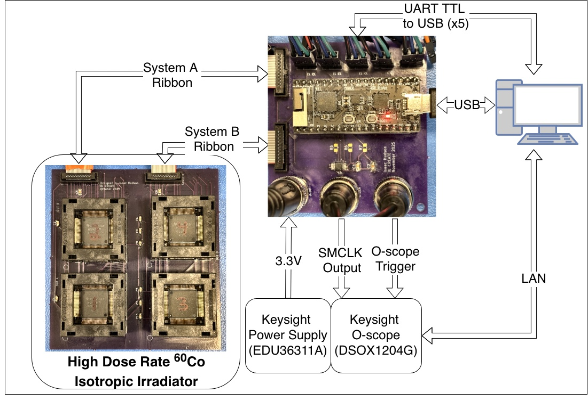

Research
Papers, posters, and tools
IEEE NSREC 2026
TID-Induced Failure in a Complex Microcontroller
Inter-device variability in TID-induced failure across ninety-seven MSP430FR6989 microcontrollers, with beyond-worst-case screening and in-situ health monitoring using the device's own oscillators.
Visit companion site ↗RADECS 2026
Dynamic SEE Test Design Optimizer
A calculator for planning dynamic single-event effect test campaigns: enter measurable parameters and it returns the flux and batch size that maximize verified data per hour of beam time.
Open the tool ↗In the field
Test setups
